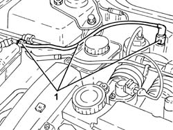

1080E61 FUEL VAPOUR PIPE FROM VAPOUR FILTER TO INTERMEDIATE COUPLING - R.R.
- Path
- Procedures > 10 ENGINE UNIT > 1080 EXHAUST EMISSION CONTROL SYSTEM > 1080E EVAPORATION CONTROL SYSTEM > 1080E61 FUEL VAPOUR PIPE FROM VAPOUR FILTER TO INTERMEDIATE COUPLING - R.R.
- Kind
- repair procedure (removal / refitting; the operation number is the code)
- Applies to
- engines: 1.8 T.SPARK, 2.0 JTS; all production periods
- Interactive page
- https://sloeber94.github.io/elrnDB-aGt/en/#/125001143
Applies to: engines: 2.0 JTS; all production periods
 Removing
Removing
 Refitting
RefittingProceed with the removal
Op. 1016A40 IGNITION COIL COVER ON CYLINDER HEAD- R+R.
1. Disconnect the fast-on connectors and remove the fuel vapour pipe from the activated charcoal filter to the intermediate joint.

Applies to: engines: 2.0 JTS; all production periods
Refitting
RemovingRefit the fuel vapour pipe frmo the activated charcoal filter to the intermediate joint and connect the fast-on connectors.
Proceed with the refitting
Applies to: engines: 1.8 T.SPARK; all production periods
Removing
Refitting- Disconnect the fast-on connectors and remove the fuel vapour pipe from the activated charcoal filter to the intermediate joint.
Applies to: engines: 1.8 T.SPARK; all production periods
Refitting
Removing- Refit the fuel vapour pipe frmo the activated charcoal filter to the intermediate joint and connect the fast-on connectors.
- Op. 1016A40 IGNITION COIL COVER ON CYLINDER HEAD- R+R